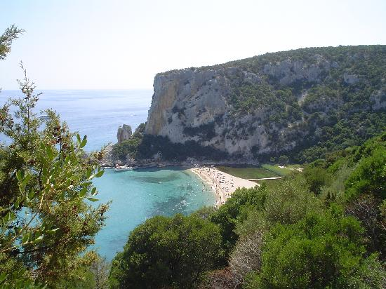
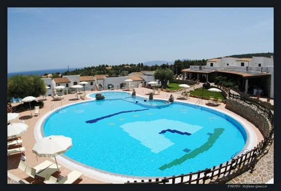
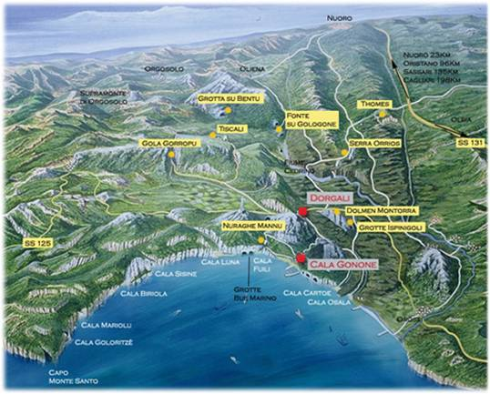
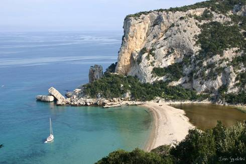
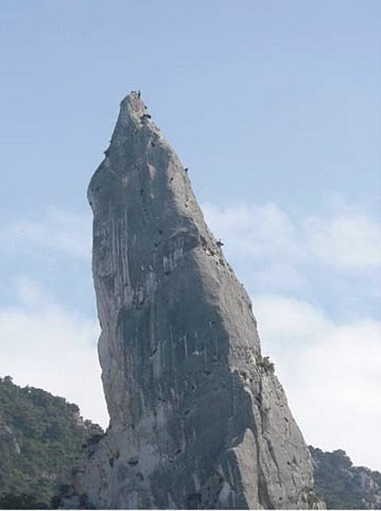

Welcome to ASIC 2012
The Eleventh Annual Summer Interdisciplinary Conference, held at the Club Hotel Nuraghe Arvu, Cala Gonone, Sardinia, Thursday, June 7 – Tuesday, June 12, 2012.

Club Hotel Nuraghe Arvu, Cala Gonone, Sardinia.
This hotel, currently top rated in the area, may be reached by car or bus from nearby airports on Sardinia, or by ferry from Italy. The town sits in the Gulf of Orosei, surrounded by a national park, with nearby beaches that have served as film settings — wild and wonderful scenery with cliffs and canyons surrounding the bay, and opportunities for extraordinary climbing, swimming, snorkeling, diving, and hiking. The town was formerly reached only by boat, but a tunnel through the cliffs now makes it accessible by road (via the nearest town, Dorgali).
Attendees might want to take the opportunity before or after the conference to visit other destinations in the area, particularly the rest of Sardinia, Corsica, Sicily, and mainland Italy. Breakfasts and dinners are included at the hotel.
ASIC 2012 was scheduled at a time allowing attendance also at the Cognitive Science and Mathematical Psychology annual meetings, tentatively scheduled in Japan the first week of August; the distance between Sardinia and Japan made it unlikely anyone would attend both on a single trip, so ASIC was separated by a few months from those conferences.
Richard M. Shiffrin of Indiana University – Bloomington is the organizer. Email correspondence should be directed to shiffrin@indiana.edu or mailed to Richard M. Shiffrin at Indiana University (see the Contact tab for the address).
About the conference
The subject matter of ASIC is interdisciplinary, within the broad frame of cognitive science. ASIC uses the successful format of previous ASIC and AIC conferences: days are free for leisure activities and discussions among participants, and talks and posters are in the later afternoon and early evening, followed by dinner. The date is chosen to make it convenient for attendees to bring family and friends. The conference is open to all interested parties, and an invitation is not needed to attend. However, due to the small number of speaking spots, the organizer selects the attendees who give talks, and additional attendees have the opportunity to present posters.
Conference aims
The conference covers a wide range of subjects in cognitive science, including:
- modeling of cognition
- neuroscience, cognitive neuroscience
- psychology (including perception, psychophysics, attention, information processing, memory and cognition)
- computer science and artificial intelligence
- machine intelligence and learning
- methodology and statistics
- linguistics, psycholinguistics and computational linguistics
- philosophy of mind, cognitive science
We especially invite talks emphasizing theory, mathematical modeling, and computational modeling (including neural networks and artificial intelligence). Nonetheless, we require talks that are comprehensible and interesting to a wide scientific audience.
Conference format
There is a single speaking session each day. If the number of participants exceeds the number of 30-minute speaking slots (6×7=42), then one or two sessions will be devoted to shorter talks. The conference starts with registration and a reception on the first day, running 15:30–16:15 on Thursday, June 7. On subsequent days there are drinks and light snacks from about 16:00–16:15, followed by a session of seven or more spoken presentations that include a mid-session drink break.
This format frees most of the day for discussions with colleagues or various other activities with colleagues, family, and friends. The time frame allows day trips to nearby sites, but attendees should arrange to return in time for the sessions.
Invitation
The conference is open to all scholars who fit the very general theme of the conference, and their family and friends. An individual invitation is not needed. We encourage you to send the conference information to friends and colleagues. If you are interested in organizing a half or whole topic session, contact the organizer.
Registration
You are not officially on the request list for presenting research (talks or posters) until you submit the registration fee, preferably by PayPal.
This fee pays for rental of the conference room, equipment rentals, snacks and drinks at conference breaks, the opening reception, and the banquet charges.
Fee schedule (US dollars)
| Payment window | By check or PayPal |
|---|---|
| Prior to Jan. 1, 2012 | $150 |
| Jan. 1 – March 1, 2012 | $200 |
| After March 1, 2012 | $250 |
In addition to the registration fee per person, you may purchase additional guest vouchers for other persons attending the opening reception and/or final banquet.
How to pay
- Online by PayPal (preferred).
- Send a check for the correct amount to ASIC 2012, c/o Richard M. Shiffrin, Psychology Dept., Indiana University, Bloomington, IN 47405.
Lodging
A hold has been placed on all rooms at the Club Hotel Nuraghe Arvu in Cala Gonone, Sardinia.

The hotel grounds at Nuraghe Arvu.
The hotel is in the south part of the village, on a hill with a mountain behind, overlooking the Gulf of Orosei. It has some very nice pools, and the beaches are about 500 meters downhill. See the Travel tab for directions and ways to reach the hotel. Hotel website: hotelnuraghearvu.com.
Rates
Lodging rates include breakfast and dinner buffet for each person each day. Reservations should be made early, because all rooms are expected to fill, and late reservations will have to be accommodated at nearby alternative sites.
- One person in a room (two twin beds or one queen): €100/day.
- Two persons in a room: €80/person/day.
There are 37 "standard" rooms at this rate; of these, 10 have a sea view and 8 are by the pool — book early for those. Standard rooms are 22 m², with shower/WC and an 8 m² terrace. There are also 10 "superior" rooms at roughly a 25% supplement — 25 m², all with a sea view and an 8 m² terrace. There are also three suites (price on request) — 50 m², with sea view, a bedroom, a living room (convertible to a second bedroom), a bathroom with hydro-massage, and a private terrace of 60 m².
Bookings can be made to info@hotelnuraghearvu.com.
Address & telephone
Hotel Nuraghe Arvu
Viale Bue Marino – Calagonone 08022 Dorgali (NU)
Tel. 0784 920075 · Fax 0784 920516 · Cell. 333 2694693
Dining
Breakfasts and dinners are included as part of the conference lodging/dining package.
Although there are a few good restaurants in the small village of Cala Gonone, the hotel kitchen is quite good, and we will use the hotel for breakfasts and dinners. Lunches, if desired, can be purchased separately either at the hotel or at restaurants in the village or area. Anyone wanting lunch every day can pay for full board rather than half board, with a supplement of about 19 euro per day.
The day begins with a continental breakfast buffet in the breakfast room from 8:00–9:30. Each day the conference begins with light snacks and drinks at about 16:00–16:15, followed by talks and a mid-session break with more drinks (about 18:00). The first day of the conference has a reception with wine, beer, and more elaborate snacks from 15:30–16:15. Dinner follows directly after the sessions, at approximately 20:15. The dinner buffet offerings change from day to day, with choices of meat, fish, and vegetarian options.
The registration fee pays for the food and drink at session breaks, the extra food and drink at the opening reception, and the conference banquet.
Travel
The nearest access to Cala Gonone is via the city of Olbia, home to the nearest Sardinia airport.
Some attendees will fly to Rome, take a shuttle/bus to Civitavecchia, and take a Moby ferry to Olbia (other ferries leave from other Italian cities); others will fly directly to Olbia. Most attendees will rent a car at Olbia, where many international and local rental companies operate.
By bus
A few attendees may want to take buses from Olbia to Cala Gonone: ARST buses run to Nuoro (#514) and then to Cala Gonone (#520):
| Bus #514 | Leaves Olbia Airport | Arrives Nuoro |
|---|---|---|
| 9:40 | 12:06 | |
| 12:50 | 15:16 | |
| 16:05 | 18:31 |
| Bus #520 | Leaves Nuoro | Arrives Cala Gonone |
|---|---|---|
| 14:00 | 15:10 | |
| 15:50 | 17:00 | |
| 19:10 | 20:20 |
Purchase bus tickets before boarding. The ARST bus website (for other itineraries) is arstspa.info. Deplano buses (0784 29 50 30) also leave Cala Gonone for Olbia airport via Dorgali, four per day between 6:30am and 1:15pm, €15, tickets bought onboard. Buses stop in front of the post office on Via Cala Luna and at the tourist office on Viale del Bue Marino (open Mon–Sat 8:15am–1:15pm; postal code 08020).
The airport
Olbia is the main port for tourists to Sardinia, receiving ferries from mainland Italy as well as having its own airport, with a modern terminal renovated in 2004 and handicap facilities. Arrivals include lost and found, cashpoints, internet kiosks, and an information desk, plus stores, a pharmacy, newspaper/bookstores, two banks, a café, a wine bar, a restaurant, and a business center.
Car rental companies in the arrivals hall include Autoeuropa, Avis, Easycar, Ellepi, Europcar, Eurorent, Hertz, Italy by Car, Maggiore, Matta, Midarent, Pinna, Ruvioli, Sardinya, Sixt and Smeralda Express — get a quote in advance, as surprise charges can appear at the collection desk. Airport transfers, taxis (about €15 for the 3 km into Olbia city centre), and shared private shuttle buses are also options.
Activities
The general area around Cala Gonone is remarkable and offers many activities: swimming, snorkeling, boating, scuba diving, hiking, and rock climbing.

The general setting in the Gulf of Orosei.
The entire coast of the Gulf of Orosei is rugged and gorgeous: purple limestone cliffs erupt 1,000 or more feet from the Mediterranean, ravines with wild goats and boars are everywhere, and isolated beaches of extreme beauty and clarity sit at the base of the cliffs. Caves abound and some can be toured by boat.
Beaches
Beaches are scattered along the Orosei Gulf, beautiful and spectacular, with clear blue water, cliffs and mountains as backdrop, and easily visible coral reefs. A few are in Cala Gonone itself; others are reachable by boat, by rugged hiking trails, or by car.

Cala Luna, often described as one of the most beautiful beaches in the Mediterranean, and the setting for several films.
Cala Luna has coarse sand and transparent, changing-blue waters, lying within steep walls of rock that hold deep caves opening onto the beach. It is accessed by sea (pleasure boats or scheduled boats from the port of Cala Gonone) or, for hikers, along a difficult path from Cala Fuili or Baunei. Other notable beaches in the area include Cala Fuili (the entry point for a canyon with spectacular climbing), Bidderosa (five coves protected as a nature reserve, entry by ticket only), Cartoe (wheelchair accessible, with facilities), Cala Sisine (500-meter cliffs plunging into the sea, ideal for snorkeling), Cala Mariolu (round pink pebbles and sea caves), and Cala Goloritzé (a national monument with turquoise water and a famous climbing spire, the Aguglia).
Rock climbing

Sport climbing on the cliffs above the Gulf of Orosei.
Sardinia generally is famous for sport climbing, and the most famous, well-developed and world-renowned area is around Cala Gonone. There are about 25 developed areas on the sea cliffs and in the ravines nearby, with roughly 1,000 bolted routes. Codula Fuili, a narrow valley opening onto the beach south of town, has many climbs of all grades that stay cool and shaded even in summer. Further inland, the Supramonte areas near Oliena offer more climbing, and at the south end of the gulf, near Cala Goloritzé, sits the celebrated tower Aguglia.
A useful guidebook for Sardinia generally is Pietra di Luna: A Guide to Sport Climbing in Sardinia (Maurizio Oviglia, available in English). A newer guidebook focused specifically on the Cala Gonone area is Cala Gonone Sports Climbing Guidebook – Arrampicare a Cala Gonone, by Corrado Conca.
Other activities
Swimming, snorkeling, scuba diving, scuba fishing, fishing, water skiing, wind surfing, surfing, bungee jumping, canyoning, boating, kayaking, and pedal boating are all available in the area, along with boat tours from Cala Gonone to the Blue Grotto caves.
Contact
Email is preferred for all correspondence.
Conference organizer
Rich Shiffrin
Indiana University – Bloomington
shiffrin@indiana.edu
Tel: 812-855-4972 · Fax: 812-855-9871
Address correspondence to
Annual Summer Interdisciplinary Conference (ASIC 2012)
c/o Prof. Richard Shiffrin, Psychology Department
Indiana University, 1101 E. 10th St., Bloomington, IN 47405
Webmaster / conference coordinator
Please direct questions concerning the website to:
Ruth Eberle
Indiana University – Bloomington
reberle@indiana.edu
Muhammad Nubli Mohd Kasa
Indiana University – Bloomington